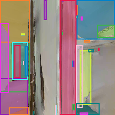

9Graph SDK
Build and run the same graphs as a Python library — no canvas, no JSON authoring.
Every graph on the platform is a GraphDefinition — a pure dataclass the canvas emits, the JSON stores, and the GraphExecutor runs (Graph-Expressible Agents). The Graph SDK adds a third way to produce and drive that same object: write it in Python, imported like LangGraph / LangChain rather than authored as JSON or wired on the canvas. Same nodes, same executor, same eval — just a builder in front and a runner behind. Because it is the same GraphDefinition, code ⇄ JSON ⇄ canvas stay fully reversible.
Design docs: SDK Builder Contract · SDK Dependency Boundary · Graph SDK Record / Replay · Graph Executor · builds on Graph-Expressible Agents, Nested Graph System, Graph Execution Engine, Batch Evaluation
1. Three ways to the same graph
| Author with | Surface | Produces |
|---|---|---|
| Canvas | Visual editor (#8) | GraphDefinition JSON |
| JSON | Hand-written workspace/graphs/**.json |
GraphDefinition JSON |
| Code (this page) | from agentcanvas import Graph |
the same GraphDefinition — in memory, runnable, serialisable |
The Graph SDK surface is a thin, ergonomic wrapper over the existing dataclass model (app/graph_def.py) and the in-process engine (app/agent_loop/graph_executor.py). It adds no new execution machinery — every method assembles the same NodeDef / EdgeDef / ContainerDef the canvas emits.
2. Build a graph in code
Three moves build any graph: add a node, connect two ports, mark the boundary with graph_out — then run. Node types you write yourself are BaseCanvasNode subclasses you register_node(); the platform ships no arithmetic builtins, so this hermetic hello-world defines its own. Extra kwargs to add become the node's config; the graphOut's portName becomes the run's output key. (A graph that spans real GPU nodesets — Habitat, SAM — is §4.)
from agentcanvas import Graph from app.agent_loop.builtin_nodes import register_node from app.components.bases import BaseCanvasNode, PortDef # The platform ships no arithmetic builtins, so a hello-world defines its own. class Const(BaseCanvasNode): node_type = "ex_const" input_ports: list[PortDef] = [] output_ports = [PortDef("value", "ANY")] async def forward(self, inputs, ctx): return {"value": self.config.get("value", 0)} class Add(BaseCanvasNode): node_type = "ex_add" input_ports = [PortDef("a", "ANY"), PortDef("b", "ANY")] output_ports = [PortDef("sum", "ANY")] async def forward(self, inputs, ctx): return {"sum": inputs["a"] + inputs["b"]} register_node(Const); register_node(Add) g = Graph(name="demo") a, b = g.add("ex_const", value=7), g.add("ex_const", value=5) add, out = g.add("ex_add"), g.graph_out("total") g.connect(a.out("value"), add.in_("a")) g.connect(b.out("value"), add.in_("b")) g.connect(add.out("sum"), out.in_("value")) print(g.run()["total"]) # -> 12, in-process, no backend
Shared state is first-class too: g.container(id, states=…) declares a blackboard and g.grant(node, container_id) gives a node read/write access — the same containers + access grants the canvas draws.
3. Catalog, typed authoring & validation
Answer "what can I add?" without spawning anything: catalog() / describe(node_type) / nodesets() read every node type — ports, config schema, owning nodeset, server/env routing — from a spawn-free workspace scan. For IDE support, agentcanvas.nodes ships generated typed stubs (regenerate with generate_node_stubs()): g.add(EnvHabitat.reset) gets completion and port checking, and stays fully interchangeable with the string form g.add("env_habitat__reset"). Validation is default-on: every run() first checks the graph resolves — unknown node types, required input ports with no incoming edge — and a failure raises GraphValidationError listing every issue at once, before anything executes; validate=True adds the deeper connectivity pass.
from agentcanvas import catalog, describe, nodesets from agentcanvas.nodes import EnvHabitat, ModelSam # generated typed stubs catalog() # every node type, from a spawn-free workspace scan describe("model_sam__segment_auto") # ports, config schema, nodeset, server/env g.add(EnvHabitat.reset, id="reset") # typed authoring — IDE completion, checked ports
4. Run it in-process
g.run() drives GraphExecutor.run() directly — the same engine as the canvas Play button — with no FastAPI, no scheduler, and no GPU-admission gate (that lives in JobScheduler, not the executor). Pure-Python graphs run untouched (§2). Nodeset graphs run too — and a real one usually spans more than one conda env. Here is the whole story in a single graph: sample Habitat's first frame, segment it with SAM, save the annotated frame.
Two of the node types run in foreign conda envs this process must never import — env_habitat__* (habitat-sim, ac-vlnce) and model_sam__* (SAM, ac-fm). The two glue nodes (RgbToPng, OverlayMasks) are the other kind: tiny BaseCanvasNode subclasses defined and register_node()'d right here, running in-process. One build() wires all five:
def build() -> Graph: g = Graph(name="habitat-sam-first-frame") reset = g.add("env_habitat__reset", id="reset") observe = g.add("env_habitat__observe_egocentric", id="observe") to_png = g.add("ex_rgb_to_png", id="to_png") sam = g.add("model_sam__segment_auto", id="sam") # defaults: variant=sam1, sam_vit_b.pth overlay = g.add("ex_overlay_masks", id="overlay") annotated = g.graph_out("annotated") num_masks = g.graph_out("num_masks") g.connect(reset.out("episode_id"), observe.in_("trigger")) # observe only after reset g.connect(observe.out("rgb"), to_png.in_("rgb")) # frame → base64 for SAM g.connect(to_png.out("image_b64"), sam.in_("image_b64")) g.connect(observe.out("rgb"), overlay.in_("rgb")) # fan-out: raw frame reused g.connect(sam.out("masks"), overlay.in_("masks")) g.connect(overlay.out("annotated"), annotated.in_("value")) g.connect(overlay.out("count"), num_masks.in_("value")) return g
The seam between the two worlds is real: Habitat emits rgb as an np.ndarray (msgpack restores it as one across the proxy), while SAM wants a base64 PNG string — so a three-line local node bridges it:
class RgbToPng(BaseCanvasNode): node_type = "ex_rgb_to_png" input_ports = [PortDef("rgb", "IMAGE", "RGB frame (np.uint8 H,W,3)")] output_ports = [PortDef("image_b64", "TEXT", "Base64-encoded PNG")] async def forward(self, inputs: dict, ctx) -> dict: rgb = np.asarray(inputs["rgb"], dtype=np.uint8) buf = io.BytesIO() Image.fromarray(rgb, "RGB").save(buf, format="PNG") return {"image_b64": base64.b64encode(buf.getvalue()).decode()}
One call runs it: load_nodesets="auto" scans the workspace registry, spawns an auto_host subprocess for each env, reaches them over HTTP, and tears them down when the run ends.
g = build() # the graph above r = g.run(load_nodesets="auto") # spawns ac-vlnce + ac-fm, proxies, tears them down frame, n = r.outputs["annotated"], r.outputs["num_masks"] # SAM found 35 masks — annotated frame saved to outputs/habitat_sam_first_frame.png

zsNo4HB9uLZ) with SAM's 35 auto-masks and boxes — produced end-to-end by the graph above, in-process.Both worlds, one graph. load_nodesets="auto" classifies every node from workspace metadata alone — no habitat or torch imported in the calling process — routing server nodes to a subprocess + proxy and running local nodes in-process:
| Node | Where it runs |
|---|---|
env_habitat__reset · env_habitat__observe_egocentric | server → ac-vlnce subprocess, HTTP proxy |
model_sam__segment_auto | server → ac-fm subprocess, HTTP proxy |
RgbToPng · OverlayMasks (defined in the example) | local → in-process (you register_node() them) |
The env node never runs inside the calling process. ensure_nodesets_for_graph() spawns an auto_host subprocess in the nodeset's own conda env, registers HTTP-proxy node classes into the global NODE_HANDLERS, and the executor reaches the simulator through those proxies:
g.run(load_nodesets="auto")
│ scan_all() + ensure_nodesets_for_graph() → register node types into NODE_HANDLERS
▼
GraphExecutor.run(graph, DefaultSession) ← same engine as the canvas Play button
│ ex_rgb_to_png / ex_overlay_masks → run in-process (local mode)
│ env_habitat__* nodes ──HTTP──▶ auto_host subprocess (ac-vlnce env, habitat-sim + GPU)
│ model_sam__* nodes ──HTTP──▶ auto_host subprocess (ac-fm env, SAM + GPU)
▼
RunResult.outputs["annotated"] → teardown: both env servers unloaded
A real env run is an experiment. Spawning habitat-sim and SAM uses the GPU, so this belongs behind /experiment:run (GPU admission, port regulation), not a bare call in a busy session. The code path is identical either way — only admission control differs. Full runnable file: agentcanvas/backend/examples/07_habitat_sam.py.
5. Watch a run: on_event
g.run(on_event=cb) surfaces the executor's per-node lifecycle as typed RunEvent objects, delivered as they happen — the same events the engine's shell-hook dispatcher sees, now consumable in Python without tailing logs. Six kinds: graph_start, node_start (node + live inputs), node_finish (outputs + duration_ms), node_error, graph_complete (terminated + metrics), graph_error. The callback may be sync or async, runs inside the executor's event loop (keep it cheap), and a callback exception is logged, never fatal to the run.
events = [] r = g.run(on_event=events.append) # sync or async callback, called in-loop for e in events: print(e) # node_start / node_finish / node_error / graph_complete …
6. Record & replay: GPU graphs as hermetic tests
One real run records; every later run replays offline. g.run(record="run.mpk") tees every server-node result of a real run into a cassette (msgpack + zlib — ndarray / tensor / PIL results survive byte-exact); g.run(replay="run.mpk") reruns the graph with no servers, no conda envs, no GPU — server calls answered from the recording while local nodes run for real, so a topology or port drift from the recording fails loudly instead of silently passing. The shipped Habitat→SAM cassette replays a two-conda-env GPU graph as an ordinary unit test in CI. Mechanism, cassette format, and the honest limits (order-based matching, not input matching): design doc — Graph SDK Record / Replay.
g.run(record="run.mpk") # real run — tee every server-node result g.run(replay="run.mpk") # offline — no servers, local nodes still real
7. Batch evaluation
g.eval(episodes=N, dataset=…, split=…) is the Graph SDK entry to Batch Evaluation. It constructs the very same BatchEvalRunner the backend eval API uses (app/agent_loop/eval_batch.py) — one GraphExecutor run per episode, episode placement pushed through the env panel, per-episode metrics harvested from the graph's metrics graphOut, and the aggregate computed as the mean over completed episodes. The returned EvalResult carries .metrics (aggregate), .episodes (per-episode), and .by_task. "Correct" here is structural: g.eval does not re-implement evaluation, it reuses the audited runner.
from app.mapgpt_mp3d_sdk import build g = build() ev = g.eval(episodes=10, dataset="R2R", split="val_unseen") # BatchEvalRunner, one executor run per episode print(ev.metrics) # aggregate over completed episodes: {'success': ..., 'spl': ...} print(ev.episodes[0]) # per-episode breakdown
8. Authoring sugar: loop / hook / composite
The fiddly parts of a graph get intent-named helpers. g.loop(init=…, carry=…) declares a two-sided iterIn/iterOut episode loop (Graph-Expressible Agents §3) with the correct persist flags set automatically — init-only ports persist across steps, carried ports do not persist on the init side (the iterOut carry supersedes) — so the loop can't accidentally starve on iteration 1. Wire it through the returned handle:
loop = g.loop( init=[("instruction", "TEXT")], # seed-only; persists across steps carry=[("viewpoint_id", "TEXT")], # written back each step by iterOut ) loop.seed("instruction", reset.out("instruction")) # run-start value loop.feed("viewpoint_id", observe.in_("viewpoint_id")) # wires BOTH init + carry sides loop.carry("viewpoint_id", step.out("viewpoint_id")) # per-step write-back loop.stop(budget.out("done")) # termination signal
Two more: g.hook(event, command, …) attaches a lifecycle shell hook (engine extension points) — GraphStart, PreNodeExecute, PostNodeExecute, GraphComplete, GraphError. g.composite(id, subgraph) wraps a nested graph as a composite node (Nested Graph System); flatten_graph() expands it before execution, so composites run in-process like everything else.
9. Reverse — graph → code
The inverse direction (roadmap F4): compile any GraphDefinition — canvas-authored, loaded from JSON, or code-built — back into a self-contained builder script via graph_to_code(gd) (or Graph.to_code()). The emitted script rebuilds the same topology through this very API; the round-trip is semantically exact (node types + configs, wire multiset, containers, grants, hooks), verified against the reference MapGPT-MP3D graph.
import json from agentcanvas import Graph, graph_to_code from app.graph_def import GraphDefinition gd = GraphDefinition.from_dict(json.load(open("mapgpt_mp3d.json"))) print(graph_to_code(gd)) # a standalone, runnable builder script # ...or on a live Graph: Graph.from_definition(gd).to_code()
10. Packaging & install
pyproject.toml lives at the repo root: a fresh clone installs with a plain pip install -e ., and from agentcanvas import Graph works from any directory with no PYTHONPATH. The editable install resolves through the source tree, so the workspace/ registry — graphs, nodesets, cassettes — is discovered with zero configuration. The core install depends only on pydantic-settings; heavier capability is opt-in extras — the code always ships whole, extras just power more of it on:
| Install | Adds | Powers on |
|---|---|---|
pip install -e . | pydantic-settings | build / validate / run pure-local graphs, to_code, catalog |
… ".[server]" | httpx · msgpack · numpy | server-node proxy + cassette record / replay |
… ".[llm]" | litellm · pyyaml | the llmCall builtin node |
… ".[backend]" | FastAPI stack | the full canvas backend |
A non-editable install (pip install "agentcanvas[server] @ git+https://github.com/jianzhou0420/AgentCanvas.git") carries the engine but not the workspace — build graphs, run local nodes, replay cassettes; full nodeset runs still want the clone plus the conda envs (torch, simulators — provisioned by requirements.txt / server mode as before). PyPI publication is deliberately deferred until the top-level app package is renamed. The tier contract is CI-enforced (app/test_dependency_boundary.py) and specified in the dependency-boundary design doc. Runnable examples live under agentcanvas/backend/examples/.
11. Key Files
| File | Role |
|---|---|
agentcanvas/backend/app/graph_sdk.py |
Graph builder — add / connect / loop / hook / composite, run(load_nodesets=…), eval(…); RunResult / EvalResult / Loop |
agentcanvas/backend/app/graph_sdk_codegen.py |
graph_to_code() — the reverse compiler (graph → standalone builder script) |
agentcanvas/backend/app/graph_sdk_replay.py |
Recorder / Player / cassette persistence — record= / replay= (design doc) |
agentcanvas/backend/app/graph_def.py |
GraphDefinition / NodeDef / EdgeDef dataclasses — the shared model all three surfaces produce |
agentcanvas/backend/app/agent_loop/graph_executor.py |
GraphExecutor.run() — the in-process engine g.run() drives |
agentcanvas/backend/app/agent_loop/eval_batch.py |
BatchEvalRunner — the audited batch runner g.eval() drives |
agentcanvas/backend/app/components/registry.py |
ensure_nodesets_for_graph() — nodeset load + env-server spawn on load_nodesets |
agentcanvas/backend/agentcanvas/ + root pyproject.toml |
Pip-installable agentcanvas namespace + typed node stubs (agentcanvas.nodes); repo-root pyproject with the server/llm/backend extras |
agentcanvas/backend/app/test_graph_sdk.py · examples/ |
Hermetic tests + runnable examples (build / run / eval / codegen / record-replay) |
Status
| Item | Status | Notes |
|---|---|---|
| Build in code (add / connect / boundary / container / grant) | Done | Assembles the same GraphDefinition dataclasses; round-trips to canvas JSON |
| In-process run — pure-Python / builtin graphs | Done | g.run() drives GraphExecutor.run() directly; no FastAPI / scheduler / GPU gate |
| In-process run — nodeset graphs | Done | load_nodesets="auto" scans + loads via ensure_nodesets_for_graph(); env nodes reached over HTTP to an auto_host subprocess; teardown after. A real env episode is an experiment → /experiment:run |
Batch eval (g.eval) |
Done | Reuses BatchEvalRunner; aggregate = mean over completed episodes. Verified end-to-end on MapGPT-MP3D |
| Authoring sugar — loop / hook / composite | Done | g.loop reproduces the hand-wired MapGPT loop byte-for-byte; composites flatten + run |
Reverse codegen (to_code, F4) |
Done | Round-trip semantically exact against the verified MapGPT-MP3D graph |
Catalog + typed authoring (catalog / describe / nodesets, agentcanvas.nodes stubs) |
Done | Spawn-free workspace scan; string and typed g.add forms interchangeable |
Default-on validation (check, validate) |
Done | GraphValidationError lists every issue at once, before anything executes |
Run events (on_event / RunEvent) |
Done | Six lifecycle kinds; sync or async callback; callback exceptions never fatal |
Record / replay (record= / replay=) |
Done | Habitat→SAM cassette replays a two-env GPU graph offline in CI — design doc |
Packaging (pip install → import agentcanvas) |
Done | Repo-root pyproject; pip install -e . + extras (server/llm/backend); verified in a clean venv: import, local run, zero-config workspace discovery, cassette replay |
| Single-run metric channel | Known | Read result.outputs["metrics"] (the graphOut channel). result.metrics (the session channel) is empty for graphs whose evaluate node emits metrics without a top-level {done, metrics} — an upstream metric-outlet split, not a Graph SDK defect |
Per-episode scene_id in eval |
Known | Empty for server-mode env nodesets — the env panel's on_load readback is stubbed in server mode (upstream); aggregate metrics are unaffected |
Core surface fully implemented; the two Known rows are upstream behaviours documented for honesty, not Graph SDK defects.